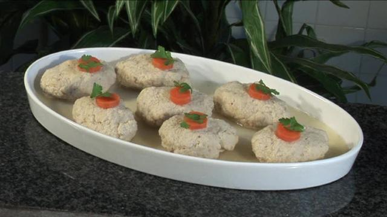
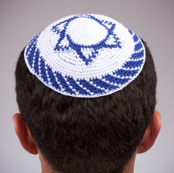

Things you will need for the Seder/Easy stuff to replace it with in Japan:
Wine/Grape Juice
Matzo/Tortillas
Horseraddish/Daikon radish mixed with wasabi
Charoset/Mashed up apple and nuts and honey
Z'roa(shank bone)/chicken bone
Hard boiled eggs
Salt water
A present for each child
Traditional passover foods/出エジプトパーティーの定番メニュー
Matzo ball soup/マツア・ボール・スープ
Gefilte fish/ゲフィルテ・フィッシュ

Men also accustom to wear a Yarmulke during passover.
男性は出エジプトパティーでヤムルカをかぶる。

LEADER
Happy Passover everyone and welcome to our Seder! We are going through the essence of the Seder:
司会者:
ハッピー出エジプト記念パーティ、ようこそ、このパーティーでは出エジプト記念の基本をおこないます！
PARTICIPANTS SAY TOGETHER OVER CUP OF WINE
Blessed is the maker of the fruit of the vine!
Thank you God for giving us festivals and seasons to rejoice, and this Festival of Matzot to commemorate the Exodus from Egypt.
You have made us and our seasons of joy holy! [ ∆ Drink first sip of grape juice / wine ]
皆で言いましょう：
ワインを作ってくれた神様、宇御名が崇められますように ！
神様、季節の祭りを作ってくれて、種無しパン（ベーキングパウダーなしパンの祭りで出エジプトを祝える様にしてくれて、ありがとうございます。
私たちと楽しい季節を作ってくれてありがとうございます。（ワイン・ジュースの一口を飲みましょう）
PARTICIPANTS SAY TOGETHER
Thank you God for bringing us to this time and place!
皆で言いましょう：
神様、ここで皆を集めらせてくれてありがとうございます！
LEADER
[ ∆ Holding matzo high ] This is the poor man’s bread that our ancestors ate in the land of Egypt. All who are hungry,
come and eat, all who are in distress, come share Passover with us! This year we are here, next year let’s celebrate in
Jerusalem. This year we are slaves, next year may we be free! Now, I have four questions:
司会者:
（種無しパンを高く持ちながら言う）この貧乏のパンは私たちの先祖がエジプトで食べたものです。お腹を空かせてる人たちは食べに来ればいい、問題を抱えている人たちは
この出エジプト記念パーティーを一緒に祝えばいい。今年はここにいるけれども、来年はイスラエルで祝いましょう。今年は私たちは奴隷だけど来年は自由な人になる！さてと、四つ
の質問がある：
Youngest child asks
1. What's up with the matzo?
2. What's the deal with horseradish?
3. What's with the dipping of the herbs?
4. What's this whole reclining at the table business?
一番若い子供が聞く：
１．このペタンコのパンは何？
２．このわさびの味がするやつは何？
３．何でハーブを塩水に入れるの？
４．何で皆テーブルで横になって食べるの？
LEADER
Answers:
1.That in all other nights we eat both
chametz(leavened food) and matzo
2.That in all other nights we eat
many vegetables,
on this night, maror(bitter herbs)?
3.That in all other nights we do not
dip vegetables even once,
on this night, we dip twice?
4.That in all other nights
some eat sitting and others reclining,
on this night, we are all reclining?
司会者:
答え：
１．他の夜はパンにベーキングパウダーを入れて食べるけど、私たちの先祖は、エジプトから逃げていた時はパンをふくらます時間がなかったので、急いで、種無しパンを作って食べてました。
２．他の夜はどんな野菜を食べてもいいけど、今夜は苦いハーブだけ食べる。
３．他の夜は野菜を塩水に入れないけど、今夜は二回も入れる。
４．他の夜はエジプト人だけが横になってたべるけど、ユダヤ人は横になっちゃいけないて言うので、しょうがなく、座って食べるけど。今夜はユダヤ人も横になって食べる。
Lets listen to Ma nishtanah
マ ニシュタ 四つの質問の歌をヘブラヤゴで聞きましょう
http://www.youtube.com/watch?v=xsWh4YaD3HE
PARTICIPANTS SAY TOGETHER
We were slaves in Egypt. God took us out with awesome miracles(like parting the sea in two, so that the Jews could escape, and then closing in up on the Egyptians).
Had God not taken us out of Egypt, then what? We,
and our children, and grandchildren would still be slaves in Egypt! So, even if we were all great Torah(old testament) scholars, we would
still have to tell about the Exodus from Egypt.
皆で言いましょう：
エジプトでは私たちは奴隷でした。神様は凄い奇跡をおこして、エジプト人から、私たちを救いました。（たとえば、海を真っ二つに割ってユダヤ人だけが逃げましたけど、私たちを追いかけて
いたエジプト人が渡ろうとした時、海が戻ってエジプト人軍がおぼれました）。
LEADER
The Torah reflects upon four types of kids: One Wise, One Evil, One Simple, and One Who Doesn’t Know How To Ask.
GUIDE the wise one through the obligations of Passover.
TELL the Evil One, we need you to be part of our people.
EXPLAIN to the Simple One, “with a strong hand God brought us out of Egypt.”
ENGAGE the one who doesn’t know how to ask, make that child feel comfortable, and tell them about the Exodus.
司会者:
旧約聖書が四人の子供の事を語る：賢い子、悪い子、シンプルな子と聞き方がわからない子。
神様、賢い子が出エジプトの義務を守るように言ってください。
悪い子には（あなたも私たちの一人になって欲しい）と言ってください。
シンプルな子に（神様が強い力を使って私たちをエジプトから出してくれた）と言ってください。
聞き方がわからない子には優しく出エジプトの事を教えてください。
PARTICIPANTS SAY TOGETHER
[ ∆ Take a drop of juice/wine from your cup for each plague](We do this because we feel sorry for the Egiptians) There are ten plagues which God brought upon the
Egyptians: Blood — frogs — Lice — Wild Beasts — Disease — Boils — Hail and fire — Locusts — Darkness — Death
of the first born.
皆で言いましょう：
（一つの災い事に一滴のジュースを涙としてこぼしましょう）（これは私たちもエジプト人の苦しみが残念だと思っているからです）神様が１０の災いをエジプト人に送りました：水が血に変わった、かえるが増殖した、エジプトをシラミだらけにした、猛獣をエジプトに逃がした、エジプト人に病気が起こしました、エジプト人にイボを付けました。アラレ
と火が空から降って来ました、太陽が隠れてずっと暗闇にしました、バッタだらけにしました、エジプト人の長男を殺しました。
LEADER
Meaning of the DAYEINU song:
If God had taken us out of Egypt and not punished our enemies, it would've been enough.
If God punished our enemies and not parted the Red Sea, it would've been enough.
If God brought us the Torah, but not brought us to Israel, it would have been enough!
If God brought us to Israel, but didn’t build a Temple, it would have been enough.
司会者:
ダイエイヌの歌の意味：
もしも、神様が私たちをエジプトから出してくれて、私たちの敵に罰を与えなかったら、それだけでよかった。
もしも、神様が私たちの敵に罰を与えただけで、海を真っ二つにわけなかったら、それだけでよかった。
もしも、神様が私たちに旧約聖書を教えてくれただけで、イスラエルまで送ってくれなかったら、それだけでよかった！
もしも、神様が私たちをイスラエルまで送ってくれただけで、ユダヤ人の神殿を作ってくれなかったら、それだけでよかった。
Lets listen to DAYEINU in Hebrew。
ダイエイヌの歌をヘブラヤゴで聞きましょう。
http://www.youtube.com/watch?v=BjFs1ROeJ3w
PARTICIPANTS SAY TOGETHER
[ ∆ point to the shank bone ] PESACH is the sacrifice our ancestors would eat during the time of the Temple, because
God passed over the houses of our ancestors in Egypt.
皆で言いましょう：
（骨に指を刺して）ペイサフと言うのは私たちの先祖がユダヤ人の神殿の時代に食べていたものです。なぜかと言うと、神様がユダヤ人の家の長男を殺さないで過ぎて行ったからです。
PARTICIPANTS SAY TOGETHER
[ ∆ point to matzo ] This is matzo. Because the dough of our ancestors did not have time to rise before God
redeemed them from Egypt.
皆で言いましょう：
（ぷくらまし粉なしパンに指をさして）これは（マッツア）です。私たちの先祖はエジプトから逃げていた時はパンをふくらます時間がなかったので、急いで、種無しパンを作って食べてました。
PARTICIPANTS SAY TOGETHER
[ ∆ point to bitter herbs ] This is MAROR - why do we eat it? Because the Egyptians oppressed our ancestors in Egypt, they
made their lives bitter with hard labour, with mortar and bricks, and other hardships.
皆で言いましょう：
（苦いハーブに指をさして）これは（マロル）と言って、なせ食べるかと言うと、私たちの先祖がエジプト人に奴隷にされて、苦い経験をしたから、その苦い経験を思い出すために食べます。
LEADER
Friends, in every generation we need to feel like WE had left Egypt. So now we need to thank and praise God for the
miracles of the Exodus. Halleluyah! Thank you God for everything!
司会者:
皆さん、私たちは自分の先祖の様に、エジプトを出た気分にならなくちゃいけない。だから、神様を褒めちぎって、エジプトから出してくれた事を感謝しなくちゃいけないのです。ハレルヤ！神様、ありがろうございます！
PARTICIPANTS SAY TOGETHER
Blessed be you God, king of the universe the maker of the fruit of the vine! [Drink the Second sip from the Cup]
皆で言いましょう：
ワインを作ってくれた神様、宇宙の王様、御名が崇められますように ！（二つ目のジュースの一口を飲みましょう）
LEADER
Blessed is the maker of bread. Blessed is God who commanded us to eat matzo! [ ∆ everyone eat matzo ]
Blessed is God who commanded us to eat bitter herbs! [ ∆ Everyone eat the Bitter Herbs- Horseradish or Romain lettuce or Wasabi ]
Rabbi Hillel combined the Passover offering, the matzo and Maror together in a sandwich and eat them to fulfill the
words of the Torah “They shall eat it with matzo and bitter herbs.” [ ∆ Make a sandwich from matzo, Charoset(apple and nuts) and Horseradish ]
司会者:
パンを作ってくれた神様、御名が崇められますように 。神様が私たちをマッツアを食べる事を指示してくれた！（皆マッツアを食べましょう）
私たちを苦いハーブを食べる事を指示してくれた神様、御名が崇められますように ！！（皆苦いハーブまたはわさびを食べましょう）
旧約聖書に”未来にユダヤ人がマッツアと苦いハーブを食べるであろう”と書かれています、ラバイヒレルと言う人が、この言葉が本当になりますように二つをあわせてヒレルサンドイッチと言う（ヒレルサンドイッチを作りましょうマッツアとマロルとハロセッ（りんごとナツを組み合わせた食べ物）を全部サンドイッチ形にして食べましょう）
Leader
Let's eat!
司会者:
食べましょう！
PARTICIPANTS SAY TOGETHER
Thank you God for this awesome meal! Blessed is the maker of the fruit of the vine!
[ Drink the Third sip of the Cup ]
[ ∆ Say together ] God bring peace to the Jewish People!
Blessed is the maker of the fruit of the vine! [ Drink the Fourth sip of the Cup ]
皆で言いましょう：
神様、このご馳走をありがとうございます！
ワインを作ってくれた神様、御名が崇められますように ！（三つ目のジュースの一口を飲みましょう）
神様がユダヤ人に平和をくれますように！
ワインを作ってくれた神様、御名が崇められますように！（四つ目のジュースの一口を飲みましょう）
GAME FOR CHILDREN:
Pour a cup of wine/juice for Elija the prophet. Have the children go out and open the door for Elija the prophet to come in. An adult must drink the cup up. and when
the children come back, tell them that Elija the prophet has come in and drank the cup.
EVERYONE TOGETHER
NEXT YEAR LET'S CELEBARATE IN JERUSALEM!
皆で言いましょう：
来年はイスラエルで祝いましょう！
LEADER
At least these are the legends of the Jews...
But what is true and serious is that our arrestors suffered from many persecutions. like the holocaust. Where millions of Jews where killed by the Nazi regime.and the pogroms in Tsarist Russia http://en.wikipedia.org/wiki/Pogrom#Tsarist_Russia which was the reason for our family to immigrate to the US.
This we better remember.
司会者：
これはユダヤ人の伝説です。
でも、本当で真面目な話は私たちの先祖がナチスにより何億人が殺されてしまった。そしてロシアで起こった「ポグロム」これだけは覚えておこうね！
GAME FOR CHILDREN:
Brake 3 Matzos per child, hide half of each Matzo. Then when the children find them, compare them to the original matzo to see if nobody has cheated. Give them a
pressent for having found the matzo.
こども用の遊び：
子供一人づつにマッツアを三つ割れましょう。そしてマッツアの半分をどこかに隠しましょう。パッズルみたいに合えば、その子供がずるをしなかった証拠になる。マッツアを見つけたら、プレゼントをあげましょう。
Explanation of cultural Judaism
It is possible to be culturally Jewish while not believing in God or miracles. Not believing in these things does not erase our heritage.